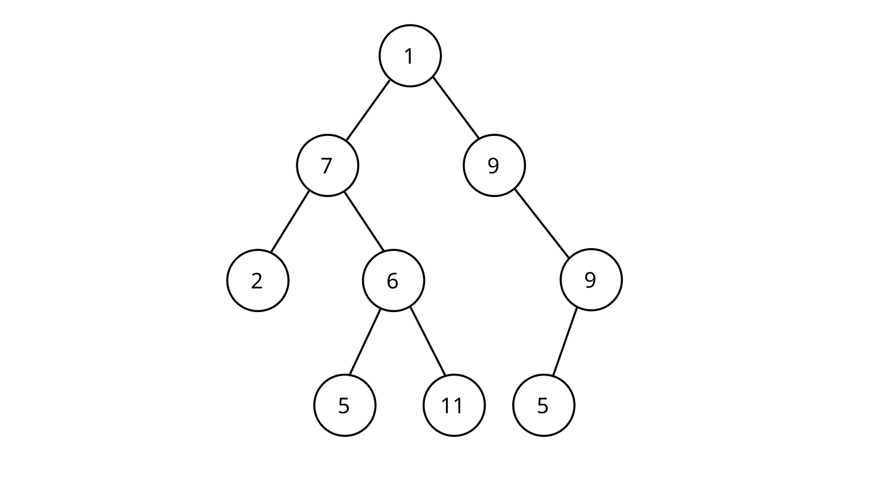

C++ – Semestrální projekt, ve kterém jsem vytvořil zjednodušenou verzi Excelu.
Program umožňoval efektivně ukládat data do tabulky. Pokud se jednalo o výraz (začínající s
"="),
pak se uložil efektivně do polymorfní stromové struktury AST a budoucí vyhodnocování pak bylo
rychlejší než opakované volání parseru. Program také umožňoval uložení tabulky v hexadecimální
podobě do souboru a následné načtení tabulky ze souboru.

PHP, Symfony – V tomto projektu používám PHP framework Symfony k vytvoření
interaktivní webové aplikace k evidenci zaměstnanců. Zaměstnance lze vyhledávat, přidávat a
upravovat. Každý zaměstnanec má funkce/role a účty, které lze
přidávat, upravovat a mazat. Projekt využívá MVC architekturu.

C – Program v C, který ze vstupu vezme zboží v regálech a poté nákupní seznamy.
Zboží uloží v manuálně spravovaných dynamických polích a poté naplánuje optimální průchod
obchodem tak, aby zákazník ušetřil co nejvíce času. Průchod vypíše na výstup.

PHP – Program v PHP, který implementuje abstraktní třídu pro jednotlivé uzly v
binárním stromu a pak také abstraktní iterátor. Iterátory jsou pak specifikované na tři odlišné
realizace: Pre-order, In-order, Post-order, umožňující tyto průchody stromem a výpis hodnot v
uzlech dle těchto průchodů.
JavaScript – Program v JavaScript, který implementuje vlastní prioritní frontu
umožňující přidání jakéhokoli prvku do fronty s číselnou prioritou. Vyšší priorita znamená, že
prvek dostane přednost.

JavaScript – Program implementující hru "clicker". Uživatel má co nejrychleji
klikat na zobrazované kuličky. Po kliknutí na kuličku dostane uživatel body a okamžitě se
zobrazí další kulička jinde. Pokud uživatel nestihne kliknout, kulička zmizí a zobrazí se nová
na jiném místě.